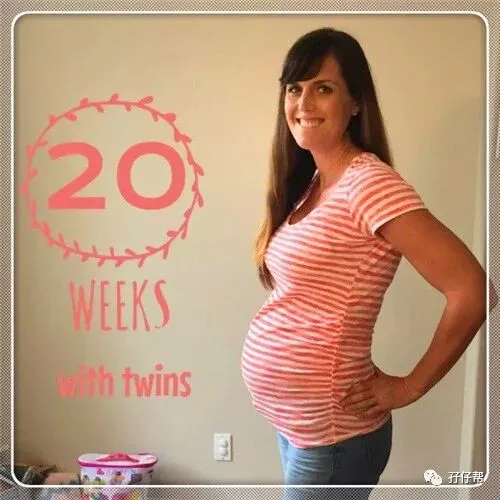
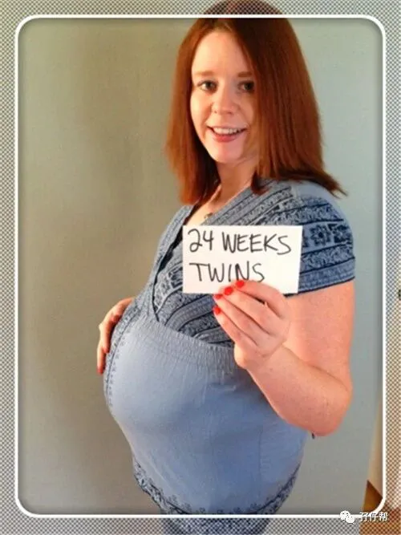
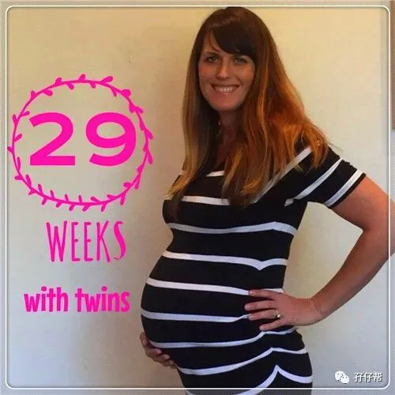
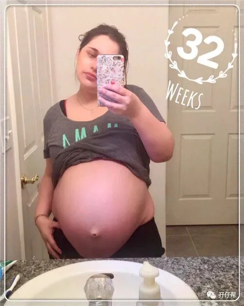
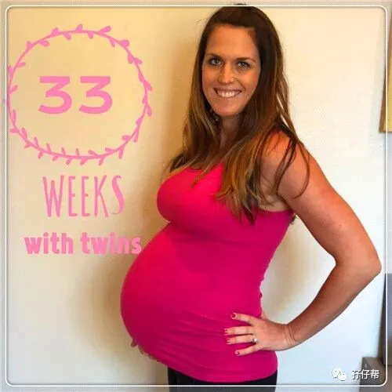
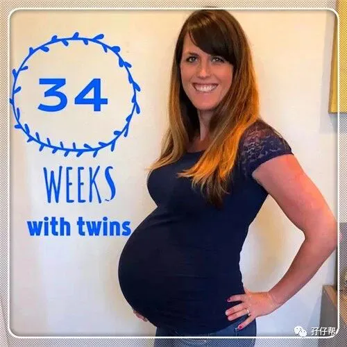
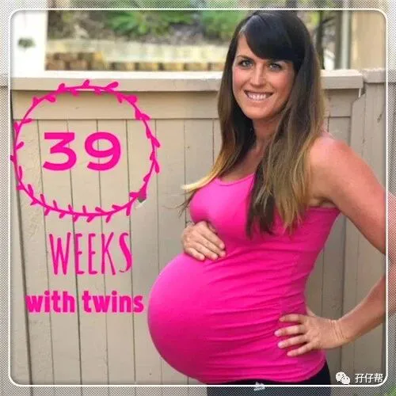

孖仔帮
与您分享双胞胎育儿路上的囧人囧事
点击蓝字
关注我们
文|圆圈妈
01
相信每一位双胞胎准妈妈在孕期都会被叮嘱，双胎妊娠风险高，一定要倍加注意。尤其是产检，要格外重视。
圆圈妈也不例外，每一位咨询我的双胞胎准妈妈，我都会格外强调定期产检的重要性。
有没有发现一个细节，你的问题医生不太愿意回答你，可是别的孕妇问了同样的问题，医生却做出回答。
难道我们双胎孕妇真被医生列入“人见人嫌”的黑名单吗？
非也！
这就看孕妇如何跟产检医生有效沟通了，这也是有技巧的哦。
今天孖仔帮的推文来聊聊如何与产检医生有效沟通，为双胎妊娠的准妈妈“传道受业解惑也”
先来看看圆圈妈的产检经历。
我的产检经历颇搞笑甚至无厘头，直到手术那会儿都没明白产检是几个意思。
试纸测出双杠挂了产科号求确认，第一次产检莫名其妙做了很多自费项目的检查，无创DNA 也是巧合下开单去做的，四维大排畸被医生折腾了40分钟还不知道发生啥事情，直到假性宫缩急诊住院后才知道，贫血，宫颈短，等剖吧！
好在福大命大，一路有惊无险地熬过来了。
02
从鬼门关走一遭出来，算是豁然开朗了，如果再来一对双胞胎，我应该这样子产检！
建档之前，统一挂妇科号
如果不想等太久只想确认是否怀孕，只需要挂普通妇科，找主治医师开化验单即可。
如果有腹痛流血，建议挂副高以上的主任医师的号，找有经验的妇科医生给你较为全面科学的保胎建议。
第一次产检，找普通门诊的产检医生
第一次产检，一般是在孕12周左右，需要做的检查很多，而且必须是空腹。刚刚才经历过孕吐或者孕吐还在进行中的准妈妈是绝对受不了长时间空腹那种煎熬感。
医院也不会因为你是孕妇就格外开恩，为了避免长时间等待，建议不要找热门的产检医生，太多孕妇咨询，只会让你等更久。
因此，只要能快速给你开化验单检查，甭管主治医生还是副高正高都可以预约，拿到所有化验报告单后再预约一个专家号看结果。
每次产检记得带病历和既往化验检查报告单
请对检查报告单温柔点，把单子按时间顺序整理好。若你觉得有特别要咨询医生的，可以把最重要的化验单放在最前面，方便医生查阅。
切记，一下子从袋子里哗啦掏出一大摞化验单不可取，只会让你越乱越慌。产妇那么多，莫怪医生没有耐心等你。
因此，请把每次产检的化验报告单分门别类地整理好，以便随时找到，给医生参考评估你的孕育情况
准备好“问题清单”
给医生看化验报告单之前，先大概了解下哪些数值升高或降低，然后把问题准备好，最好是记在小字条上或者写在手机的备忘录上，免得见到医生，一脸懵逼后全忘记了。
关于问胎儿性别这种问题，请任其烂在肚子里也不要发问。没有哪位新手爸妈不好奇两胎儿是龙凤胎？还是双龙？双凤？
除非是其他渠道得知，如熟人医生，人工试管，境外查血等，没有哪个医生会主动透露胎儿性别。
其实，都是50%概率，有什么好猜的嘛。保留点神秘也是漫漫孕育过程中一大乐趣啊！
偶尔与产检医生“耍嘴皮子”
据了解，在三甲公立医院，专家门诊给每个孕妇的平均时间是5-6分钟， 现在二胎开放了，估计人均缩短到只有3分钟了。
在有限的时间里如何巧妙从医生那里得到自己想要的答案显得非常重要了，除了提前准备好问题清单，还要注意提问的方式。
比如：贫血了，不知道吃哪个药效果好？你可以这样问，
“医生，我贫血吃XX1药还是XX2药呢？”
记住，这些“行不行”，“是不是”，“好不好”字眼，不要再问了，你永远得不到满意的答案，医生只会反射性地回答你，“不行” “不是”“好”
因此，让医生做选择题，不要做判断题。
不要让医生给你做决定
我31周因宫颈短被扣下住院，我很傻X地问：“医生我到底要不要住院啊？”
医生只告诉我因为宫颈短，建议住院随诊，并没有正面回答我。
现在想想觉得这个问题真幼稚。
医生只会帮我分析我的孕育情况并给到合理建议，至于是否采纳就要看当事人自己。
因此，正确问法是“我想在家保胎，需要注意些什么？”若医生给你在家保胎的建议，那说明情况不至于那么糟糕非要住院，但要遵医嘱！
找合口味的医生
产检，运气很重要，遇到一个靠谱的产检医生可让你整个孕期少操心很多。
市二医院有很多医生，我只喜欢找周医生。不仅仅是因为她经验丰富，而是她是为数不多的有耐心的医生，几乎有问必答。
哪怕孕妇的问题非常简单甚至无厘头，她都会简单回答，从不敷衍。非常适合我这样的新手妈妈。
只要是能出诊的医生，医术必定毋庸置疑，而医德和态度则见仁见智了。
因此，当你不知道挂哪个医生号的时候，找个好评较高，口碑较好的医生就对了。
切勿与医生寒暄过度
无可否认，人人都爱听好话。
很多孕妇产检的时候喜欢找医生唠家常套近乎，如“我那死鬼都不陪我产检…”“医生真辛苦，真是悬壶济世的大好人啊…”
进门的时候跟医生打招呼即可，那些过于寒暄客套的话就免了吧。
医生对这些话听多了，已经自动过滤了。你说的多么天花乱坠也是废话，不如直接奔入主题，讲重点。
可不要把短短的看诊时间浪费在这些无意义的谈话中。
不要拿育儿平台上的说法找医生求证
现在哪个孕妇手机里没几个育儿APP呢？信息大爆发的时代，各种育儿科普知识层出不穷，难辨真假。试图找医生逐一问个明白，这个想法有点不切实际！
换做我是医生，我也会对这些自以为是的孕妇翻白眼，这会让人觉得“既然你什么都清楚了，还问我做什么呢？”
况且医生的时间很宝贵，实在没有那么多时间去为你甄别网上的说法是真是假。
欢迎关注孖仔帮～
圆圈妈有话说
前几天遇到一位双胞胎准妈妈，已经孕24周了，还没有做过一次系统的产检。
看到孖仔帮公众号上的推文才晓得原来双胎妊娠那么多讲究。
所幸，单绒双羊妊娠的她与两胎儿都挺好，真替她捏把汗。
诚然，我们的父母那一辈，没有产检这一说法，甚至有些婆婆或妈妈也常说，产检不重要，没必要浪费钱。
产检是最基本也是最重要的孕期守则，可以帮助双胞胎准妈妈了解到两胎宝宝的发育情况。
其重要性，在此就不啰嗦了。
圆圈爸在签手术同意书的时候，医生说了一句话：“风险无处不在，若没有降临，那概率就是零，若摊上了，那就是百分百。”
我们不能拿两胎儿做赌注，并不是所有孕妇如那位双胎妈妈那般幸运。
尤其是单绒双羊性质的双胎妊娠，更加要动态监测孕育情况，随时观察两胎儿的发育情况，一旦有疑似TTTs就要及早干预，免得延误时机，错过救治机会。
看，这就是产检的重要性。
谨以此文希望双胞胎准妈妈重视产检，正确产检。
不要有侥幸心理，甭管你在大城市的三甲医院还是小城镇的乡村诊所，请务必把两胎宝宝放在第一位，从定期产检做起！
并在产检的时候与产检医生“斗智斗勇”，尽可能获取到更多孕育双胎的知识，为顺利产下两个小宝宝蓄势待发。
温馨提示：个人觉得，单胎妊娠和双胎妊娠的产检并无明显区别，双胎的产检流程几乎跟单胎的一样。个别除外...
但为避免有些产检医生粗心大意忘记看你的母婴手册，你需要在每次产检的时候，首先提醒医生，你是双胎妊娠，让医生引起重视。
重要通知
孖仔帮有双胞胎爸爸群啦！
在此你们可以互相交流下初为人父的喜悦和已为人父的辛酸，还有你们男人间的家长里短…尽情唠嗑吧！
入群方式：＋圆圈妈的微信(sgguy-com)，我会发群聊邀请给你们。欢迎准爸爸的加入双胞胎育儿大家庭，一起分享双胞胎育儿经。
1
END
1
本文系圆圈妈sgguy-com原创，来源于孖仔帮，专注双胞胎孕期育儿经验分享，著作权归孖仔帮所有。
长按识别二维码关注我们
我猜你肯定喜欢看下面的文章，对不对嘛？关注孖仔帮，回复下方文章前面的数字编号即可阅读。
105:同卵双胞胎的天敌--双胞胎输血综合征
201:双胞胎与唐氏筛查---美丽的邂逅
212:原来双胎妈妈可以这样数胎动，好简单啊
215:双胎子宫日记系列|（下）你看不看？双胞胎妈妈直播剖腹产全过程
302:喂养干货||如何训练双胞胎宝宝睡整夜觉
306: 真人示范！双胞胎妈妈高难度喂母乳技巧
404:双胞胎家庭生存技巧01：舍不得孩子套不住狼，新生入园开学季必备
604:那些又俗气又搞笑的双胞胎姓名大全【第一季】
711:想要做一个四海八荒的双胎妈妈，你需要这些工具
714:那个每天晚上9点钟才到家的双胎妈妈，失业了…
近日发现有些平台未经允许转载了圆圈妈的文章，在此声明下：
若喜欢圆圈妈的文章，无条件欢迎大家分享转发到朋友圈。
如需转载至公众号请联系圆圈妈（微信sgguy-com）授权，或扫以下微信二维码。
各位双胎妈妈，更多孖仔帮原创育儿文章请猛戳 "阅读原文" ，或者直接上圆圈妈的个人博客，大把双胎孕期育儿心得经验分享。
阅读原文：
https://www.sgguy.com/twinsbang








